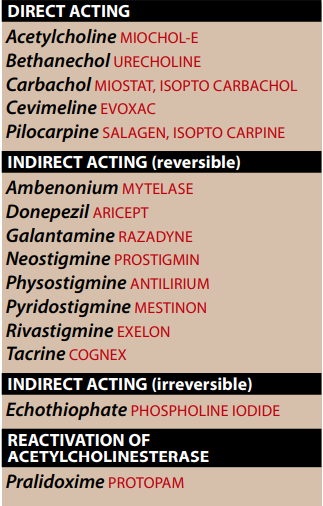
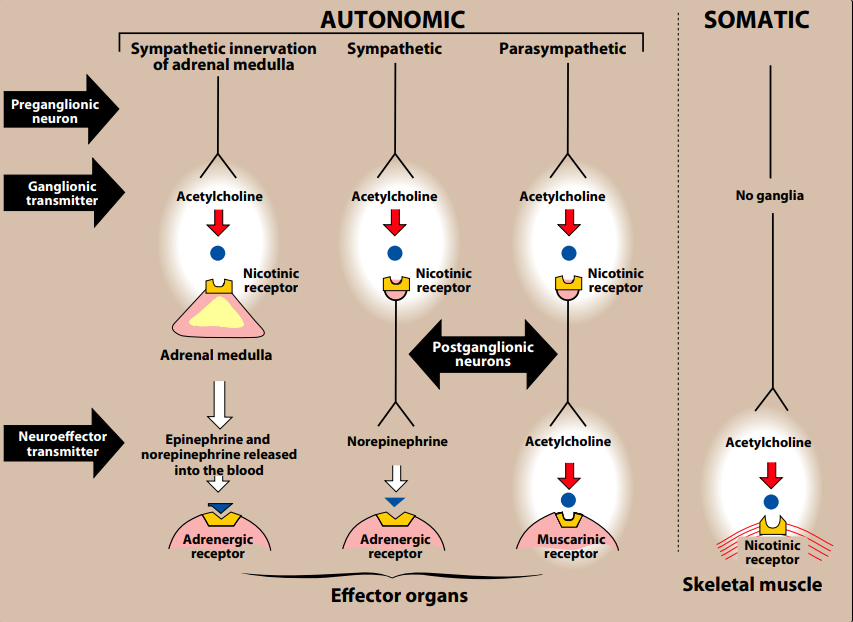
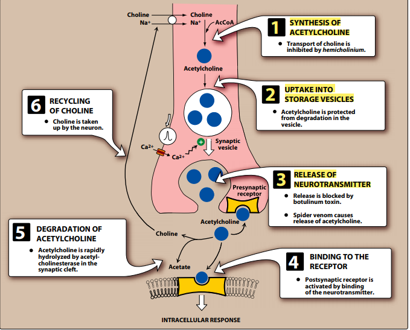
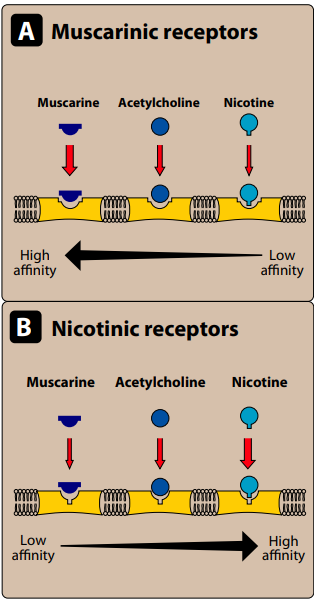
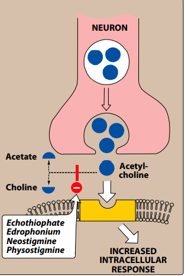
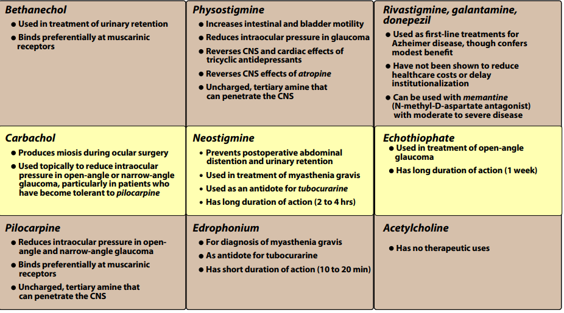
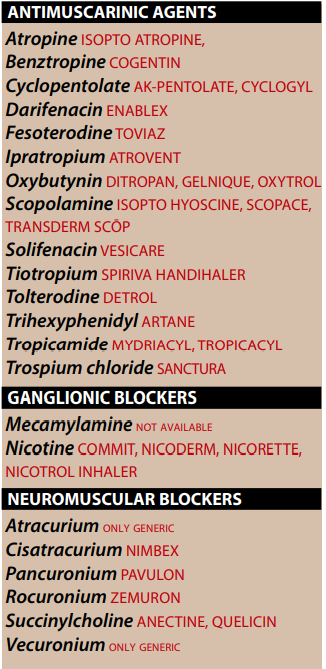
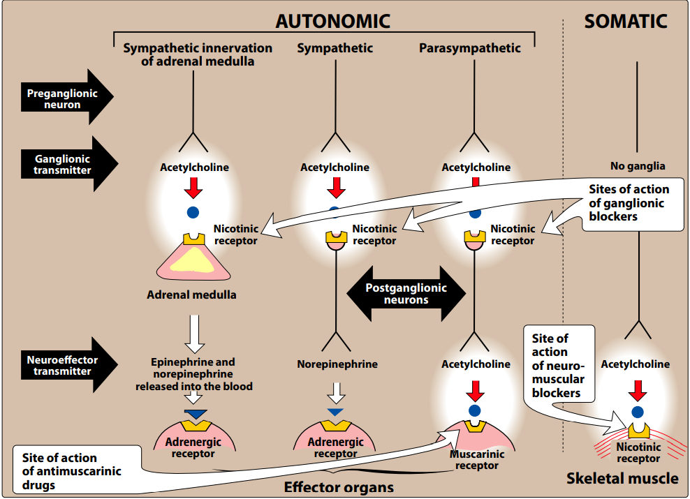
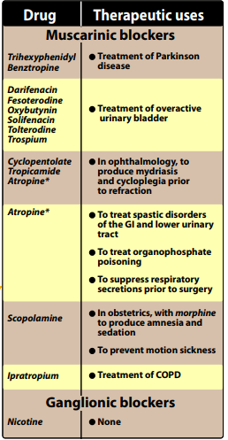

parasypatholytics (cholinolytics)

Overview
→ drugs affeting ANS are divided into two groups according to the type of neuron they affect
- Cholinergic drugs
- act on receptor that are activated by acetylcholine (ACh)
- Adrenergic drugs
- act on receptor stimulated by norepinephrine or epinephrine
THE CHOLINERGIC NEURON
→ preganglionic fibers terminated in adrenal medulla
- autonomic ganglia (para and sympa) + the postganglionic fibers of the para division
- use ACh as a neurotransmitter
- also the postganglionic sympathetic division of sweat glands use ACh
- muscles of somatic system + important role in CNS
Neurotranmission at cholinergic neurons
→ six sequential steps
1.sythesis
2.storage
3.release
4.binding of the ACh to a receptor
5.degradation of the neurotransmitter in the synaptic cleft
6.recycling of choline and acetate.
→ 
Synthesis of aceytlcholine
→ choline is transported from the extracellular fluid into cytoplasm of the cholinergic neuron into the cytoplasm
- by carrier system that contraposrts sodium and be inhibited by the drug hemicholinium
→ uptake of the choline is the rate-limmiting step in ACh synthesis.
→ Choline acetyl-tranferase catalyze the reaciton of choline with acetyl coenzyme
- A(CoA) to form ACh (ester) in the cytostol
- acetyl coa derived from the mitochondria
Storage of acetycholine in vesicles.
→ ACh is packaged and stored into
- presynaptic vehicles
- by an active transport process coupoled to the efflux of protons.
- ATP=cotransmitter
- ↑ / ↓ the effect of the primary neurotransmitter
Release of acetylcholine
→ after an action potetnial by voltage-sensitive sodium channel (nerve ending)
- arrives at voltage-sensitive calcium channel (presynaptic membrane)
- causing an ↑ in the conc. of intracellular calclium
- ↑ levels of calcium
- promotes fusion of synaptic vehicles
- and release of their contants into the synaptic space.
- promotes fusion of synaptic vehicles
- ↑ levels of calcium
- causing an ↑ in the conc. of intracellular calclium
Binding to the receptor
→ ACh released from the synaptic vesicles
- diffuses across the synaptic space
- binds to either
- of two postsynaptic receptors on the target cell
- presynaptic receptor (in the membrane of the neuron that ACh released)
- other targeted presynaptic receptors
- binds to either
- muscarinic
- nicotinic
- initiation of a nerve impulses in postganglinoic fibers
- activation of specific enezymes in effectors cells.
- as mediated by second-messagner molecules.
Degradation of acetylcholine
→ AChE cleaves ACh
- to choline and acetate in the synaptic cleft
Recycling of choline
→ choline may be recaptured by a sodium-coupled
- high affinity uptake system
- which transport the molecule back into the neuron.

CHOLINERGIC RECEPTORS (CHOLINOCEPTORS)
→ two families of cholinoreceptors
- muscarinic
- nicotinic
- cholinomimeteic agents
- parasympathomimetics
Muscarinic receptors
→ G-protein-coupled receptors
→ in addition of Ach binding
- also recognize muscarine (an alkaloid found in poisonous mush)
- m1,m2,m3,m4,m5
- M1,M2,M3 have been funcitonally characterized.
Location of muscarinic receptors
→ ganglia of the peripheral nervous system
→ autonomic effector organs
- heart,smooth muscle,brain and exocrine glands
→ M2= cardiac cells ,smooth muscle
→ M3=blader,exocrine glands,smooth muscle.
Mechanism of acetylcholine siglan transduction
→ different molecular mechanims
→ M1 and M3 activated
- undergoes conformational changes
- interact with G protein
- which activates phospholipace C1
- leads ot hydrolysis of phosphatidylinostil-(4,5)-bisphosphate
- to yield diacylglycerol(activates protein kinase C)and inositol (1,4,5)-triphosphate → (↑ intracellular Ca2+)
- leads ot hydrolysis of phosphatidylinostil-(4,5)-bisphosphate
- which activates phospholipace C1
- interact with G protein
- this cation stimulate or inhibit enzymes,hyperpolarization,secretion,contranction
- stimulates G protein
- inhibits adenylyl cyclase and increase K+ conductance
- heart responds with a decrease in rate and foce of contranction.
Muscarinic agonists and antagonists
→ piperizine
- tricylic anticholinergic drug has a greater selectively for inhibiting
- M1 muscarinic receptor[such as in the gastric muscosa]
- also produce refelx tachycardia on rapid infunsion due to blockage of M2
- competative muscarinic receptor antagonist
- with greater affinity of M3 receptor than for the other receptors.
- drug is used for overactive baldder
Νicotinic receptors
→ in addition to binding ACh also recognize nicotine
- but slow weak affinity for muscarine
→ binding of Ach molecules elicts conformational changes that allows the entry of sodium ions
- depolarization of the effector cell
- at high conc. blocks the receptor
- CNS
- adrenal medulla
- autonomic ganglia
- NMJ(neuromuscular junciton )
- 
DIRECT-ACTING CHOLINERGIC AGONIST
→ Cholinergic agonists
- also known as parasympathomimetics
- mimic the effects of ACh
- by directly binding to cholinoceptors
- mimic the effects of ACh
- choline esters (include ACh)
- synthetic esters (carbachol and bethanechol) → and naturally occuring "pilocarpine"
- have longer duration of aciton than Ach
→ show little specificity in their actions, which limits their clinical use
Acetylcholine
→ quaternary ammonium compound
- cannot penetrate membranes
- parasympathetic
- somatic nerves
- autonomic ganglia
- it lack therapeutic importance because of its multiplicity
- leading to diffuse effects
- rapid inactivation by the cholinesterases
- leading to diffuse effects
- it lack therapeutic importance because of its multiplicity
1.↓ HEART RATE AND CARDIAC OUTPUT
→ mimic the effect of vagal stimulation
e.g. // injeceted ACh produce a brief ↓ in cardiac rate and stroke volume as a result of a reduction in the rate of firing.
- ↓BLOOD PRESSURE
→ ACh3 activates M3 found on endotheliali cells lining the smooth muscle of blood vessels-
- resulting in production in nitric oxide from arginine.
- NO diffuses to vasular smooth muscsle
- to stimulate protein kinase G production
- leading to hyperpolarization and smooth muscsle relaxation/
- to stimulate protein kinase G production
- NO diffuses to vasular smooth muscsle
3.OTHER ACTIONS
→ in GIT
- ↑ salivary secretion and stimulates intenstial secretions and motility
- enchances bronchiolar secretion
- ACh ↑ the tone of the detrusor urinae muscle
Bethanechol
→ unsbustituted carbomoyl ester
- structually related to ACh
- in which replaced by carbamatae and the cholin methylated
- although is inactivated through hydrolysis by other esterases
- but does have STRONG muscarinic activity
→ about 1 hour of duration
1.ACTIONS
→ directly stimulates muscsarinic receptors
- ↑ intestinal motility and tone
- stimulates the detrusor muscsle of the bladder
- trigone and sphincter are relaxed
- ↑ voiding pressure and ↓ bladder capacity to cause explusion of urine
→ urologic treatment
- stimulate the atonic bladder
- particulary in postpartum or postperative nonobstructive urinary retention.
3.ADVERSE EFFECT
→ causes the effects of generalized cholinergic stimulation
→ sweating,salivation,flushing,↓ blood pressure , nausea,abdominal pain,
Carbachol (Carbamycholine)
→ has both muscsarinic and nicotinic activity
→ lacks the methyl group present in bethanechol
→ but like bethanechol is an ester of carbamic acid and poor substrate for AChE.
1.ACTION
→ cardiovascular and GI systems
- cuz ganglion-stimulating activity
- and may first stimulate and then depress these systems
→ locally instilled into the eye
- mimic the effect of ACh
- causing miosis and a spasm of accomodtion
→ high potency
→ receptor non selectivity and long duration of action
→ miotic agent to treat glaucoma
- onest of action for miosis is 10 to 20 min.
→ doses used ophthalmologically
- little or no side effects
- due to the lack of system penetration
PILOCARPINE
→ alkaloid is a tertiary amide and is stable hydrolysis by AChE
→ compared with ACh and its derivatives
→ far less potent but is uncharged and will penatrate the CNS
→ muscsarinic activity and used primarly in opthalmology
1.ACTION
→ applied topically to the cornea
- produce rapid miosis and contraction of the ciliary muscle
→ one of the most potent stimulators of secretions (secretagogue)
- such as sweat,tears,saliva
- but its used is limited because of it's lack of selectivity
- Sjogerns syndrome
- which characterized by dry mouth , and lack of tears
- its treated with oral pilocarpine tablets
- which characterized by dry mouth , and lack of tears
→ is used to treat glaucoma
- lowering of intraocular pressure of both noarrow-angle and wide angle glaucoma
→ miotic action of pilocarpine is also useful in reversing mydriasis due to atropine.
→ actions occur within a few minutes ,lasts 4-8 hour
3.ADVERSE EFFECTS
→ can enter the brain and cause CNS distrubunces
→ parasympathetic effects
- profuse sweating (diaphoresis), salivation.
INDIRECT-ACTING CHOLINERGIC AGONISTS
ACETYLCHOLINESTERASE INHIBITORS (REVESIBLE)

→AChE is an enzyme that specifically cleaves ACh to acetate and choline
- thus terminate its actions
→ inhibitors of AChE inderectly provide cholinergic actions by prolonging the lifetime of ACh
- accumulation of ACh in the synaptic space
EDROPHONIUM
→ prototype short acting AChE inhibitor
- bind revesibly to the active center of AChe preventing hydrolysis of Ach.
- due to rapid elimination
→ diagnosis of gravis
- causing the degradation making fewer receptors availalbe for interaciton
→ excess of the drug may provoke cholinergic crisis (atropine is the antidote)
→ may also used to assess cholinesterase inhibitor therapy
- for differentiating cholinergic and myasthenic crises.
PHYSOSTIGMINE
→is a nitrogenous carbamic acid ester found natuarly in plants and is a tertiary amine
→ substrate for AChE and it forms a relatively stable cabamoylated intermediate with the enzyme
- which becomes revesibly inactivated
1.ACTION
→ stimulates not only the muscsarinic and nicotinic sites of the ANS
→ nicotinic receptors of the NMJ
→ 2 to 4 hours
- considered to be intermediate-acting-agent
2.THERAPEUTIC USES
→ intestinal and bladder motility
- in atony
- miosis and spasm of accomodation
→ used in the treatment of overdoses of drugs with
- cholinergic action
- atropine,phenothiazines,tricylic antidepressant
→ convulsions,bracycardia,fall in cardiac output
→ accumulation of ACh → paralysis of skeletal muscle.
NEOSTIGMINE
→ synthetic compound that is also carbamic acid ester
- revesibly inhibits AChe in a manner similar to physostigmine.
→ has a quaternary nitrogen
- is more polar
- absorbed poorly from the GI
- does not enter the CNS
- effect on skeletal muscsle is greater that that of physostigmine
- can stimulate contractility before it paralyze.
- intermediate duration of action
- usually 30 min to 2 hours
→ stimulate the bladder of GIT
- as an antidote for tubocurine and other competative neuromuscular blocking agents.
→ neostigine and other AChE inhibitors
- preserve endogenous ACh
- stimulate a greater numbe of ACh receptors at the muscle endplate.
→ Cholinergic stimulation
- salivation
- flushing
- ↓ blood pressure
- nausea
- abdominal pain
- diarrhea
- bronchospams
PYRIDOSTIGMINE AND AMBENONIUM
→ cholinesterase inhibitor that are used
- in the chronic managment of myasthenia gravis
- but longer than that of neostigmine.
- similar to those of neostigmine.
TARCINE,DONEPEZIL,RIVASTIGMINE AND GALANTAMINE
→anticholinesterases as possible remedies for the loss of congistive function
→ Tacrine
- was the first availalbe but replaced because of the hepatotoxicity
- none can stop the progression.
INDIRECT-ACTING CHOLINERGI AGONISTS
ANTICHOLINESTERASES (IRREVERSIBLE)
→ synthetic organophosphate compounds
- bind covalently to AChE
- as a result long-lasting increase in ACh at all sites where it is released
- many of these drugs are extremely toxic
Echothiophate
1.MECHANISM OF ACTION
→ one of organophosphate that covalently bonds via its phosphate group to the serine OH group
- at the active site of AChE
- following covalent modification of AChE
- phosphorylated enzyme slowly release one of its ehtyl groups
- loss of alkyl group which is called "agining"
- makes imopssible for chemical reactivators
- such as pralidoxime to break the bond between the remaining drug and the enzyme
- makes imopssible for chemical reactivators
- loss of alkyl group which is called "agining"
- phosphorylated enzyme slowly release one of its ehtyl groups
→ cholinergic stimulation
- paralyis of motor function and convulsion
→ intraocullar pressure falls from the facilitatation of outlfow of aqueus humor.
3.THERAPEUTIC USE
→ chronic treatment of open-glaucoma [but its not the first line treatment]
→

CHOLINERGIC ANTAGONIST (PARASYMPATOLYTICS)-(ANTICHOLINERGIC DRUGS)

OVERVIEW
→ selectively block muscarinic receptors of the parasympathetics nerves.
- bind to cholinoreceptor
- show a preference for nicotinic receptors
- neuromascular-blocking agents
- interfere with tranmission of efferent impulses to skeletal muscle.
ANTIMUSCARINIC AGENTS

→ ATROPINE and SCOPOLAMINE
- block muscsarinic receptors
- caausing inhibition of all muscarinic funcitons
- not blocking nicotinic receptors thats why are used more clinically than cholinergics agonists
ATROPINE
→ tetriary amine belladona alkaloids
- high affinity for muscarinic receptors
- binds competatively and prevent ACh from binding
- actions last for 4 hours
- except when applied topically in the eye [where the action may last for days]
1.ACTIONS
a.eye
→ block all cholinergic activity on the eye
- presistent mydriasis (dilation of the pupil)
- unresponsivenss to light
- cycloplegia
→ Tropicamide
- or an α-adrenergic drugs
- phenyllephrine are generally favored for producing mydriasis.
b.GI
→ active isomer (I-hyosciamine)
- can be used as antispamspodic to ↓ activity of the GI tract
- Atropine and Scopolamine are the most potent
- not effective promoting healing of peptic ulcer
- reduce saliva secretion
- ocular accomodetion
- micturirion (urination)
→ reduce hypersmolarity states of the urinary bladder
→ enuresis among children
d.cardiovasular
→ produce divergent effects on the cvs
→ ↓ cardiac rate (bradycardia)
→ higher doses
- cardiac rate ↑ modestly.
- 1 mg of atropine [which is the higher doses that ordiarily given]
→ blcoks the salivery glands
- drying effect on the oral mucous(xerostomia)
- also sweat and lacrimal glands
- elevated body temperature
- also sweat and lacrimal glands
a.opthalmic
→ mydriatic and cycloplegic effect
→ phenylephrine or similar a-adrenergic drugs
- prefered for pupillary dilation [due to prolonged effect of the drug]
- cyclopentolate and tropicamide
d.antispasmodic
→ relax GI tract and bladder
c.antidote for cholinergic agonist
→ cholinesterase inhibitor inscecticides
- and some types of mush poisoning
- derived from the action of inhibitors of AChE such as physostigmine.
→ readily absorbed
→ partialy metabolized by the liver
→ eliminated primarly by the urine
→ half-life about 4 hours
4.ADVERSE EFFECTS
→ dry mouth
- blurred vision
- sandy eyes
- tachycardia
- urinary retention
- constipation
- restlesness
- confusion
- hallucination
- dellirum ⇒ which may result to depression
SCOPOLAMINE
→ another tertiary amine plant alkaloid
→ producec pripheral effects similar to those of atropine
→ greater action on the CNS
- longer duration of action in comparsion to those of atropine
→ most effective anti-motin sickness drug available
→ unsual effect of blocking short-term memory
→ produce sedation (in contrast to atropine)
- but higher doses
- can produce excitement instead.
2.THERAPEUTIC USES
→ although similar to atropine
→ motion sickness
- prophylacticaly
→ similar to those of atropine
IPRATROPIUM AND TIOTROPIUM
→inhaled
→ quaternary derivatives of atropine
→ bronchodilators for maintenance treatment of brochospams (assosciated with COPD)
- chronic bronchitis or edema
- isolating their effects in the pulmonary systeme
- admin. orally
- major adv over ipratropium which requires dosing for four times daily
TROPICAMIDE AND CYCLOPENTOLATE
→ used similary to atropine as ophthalmic solution for
- mydriasis and cylcoplegia
→ tropicamide
- produce mydriasis for 6 hours
- producecs mydriasis for 24 hours
BEZTRTROPINE AND TRIHEXYPHENIDYL
→ mostly centrally acting antimuscarinic agents
- used for years in the treatment of Parkinson diseae
DARIFERON , FESOTERODINE , OXYBUTYNIN , SOLIFENACIN , TOLTERODINE, TRISPIUM CHLORIDE
→ synthetic atropine-like drugs
- treat overactive urinary bladder diseae
- by blocking msucarinic receptors in the bladder
- intravesicular pressure is lowered
- bladder capacity is ↑
- blaader contranction ↓
- dry mouth
- constipation
- blurred vision
- is availabne as transdermal patch
- 
GANGLIONIC BLOCKERS
→ act on nicotinic receptor
- of both para and sympathetic autonomic ganglia
→ show no selectivity toward the para or sympathetic ganglia
- and not effective as neuromuscsular antagonist
- except for nicotine
- the other drugs
- are nondepolarizing,competative antagonist.
- the other drugs
- in general leads to vasodilation
- will also produce atony of the bladder and GIT
Nicotine
→ poison with many undesirable effects
→ depolarize autonomic ganglia
- first stimulate and then paraylis of all ganglia
- effect both para and sympathetic ganglia
→ ↑ blood pressure and ↑ cardiac rate
→ ↑ peristalis and secration
→ higher doses
- blood pressure ↓ [because of ganglionic blockage]
- GIT and bladder muscularate caeses
Mecamylamine
→ produce competative nicotinic blockage of the ganglia
→
NEUROMUSCULAR BLOCKING DRUGS
→ blcok cholinergic transmission
- between motor nerve andings
- and nicotinic receptors
- on the endplate of skeletal muscsle
- and they act either
- antagonist(nondepolarizing type) or
- agonist (depolarizing type) at the receptor of the endplate of the NMJ
- producing complete muscule relaxation
→ second group of muscsle relaxants and central muscle relaxants
- are used to control spastic muscle tone
- Diazepam which binds ti GABA
- Dantrolene which act directly on muscles
- by interfereing with the release of calcium from the sarcoplasmic recticulum
- Baclofen acts at GABA receptors in the CNS
Nondepolarizing (competative)blcokers
→ first drug blocking the skeletal NMJ was Curare
→ Tubocuranine
- purifed and introduced into clinical practise in early 40's
- but largerly replaced by other agents
{kind=link}
{kind=link}
{kind=link}
{kind=link}
{kind=link}
{kind=link}
{kind=link}
{kind=link}
{kind=link}